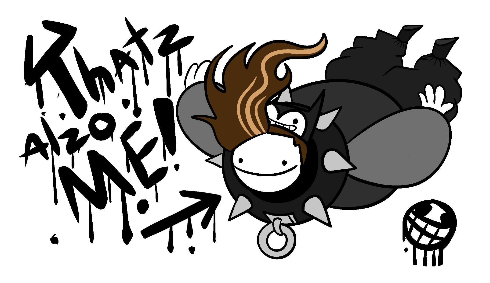

The Following Websites Used for this Project:
Dribbble: Choosing typography for web design by Renee FleckDribbble: Choosing colors for web design by Renee FleckDribbble: 11 Principles of Design by Renee Fleck
Designer's Bio
My name is Victoria Garcia. I am majoring in Graphic Design and i'm pursuing my BFA in Fine Arts: Graphic Design . I am a Junior in North Central College as i'm currently working on this project. I've previously tranferred from the College of DuPage with my Assosiate in Art . I like to say i'm a jack of all trades
"A sword wields no strength unless the hand that holds it has courage."
- The Hero's Shade. (Twilight Princess 2006)
Hobbies

Drawing
Playing Video Games
Listening to Music
Searching for Animal Facts
Exploring
Watching Cartoons/Anime
Collecting Figures
LinkedIn
Portfolio
Project description:
Design and develop a visually pleasing, interactive website with multiple HTML pages, navigation connecting all the pages, featuring a cohesive color scheme, a clear visual hierarchy, a balanced layout, exciting visuals, and text. The goal is to learn how to code/develop an interactive website by applying design principles.